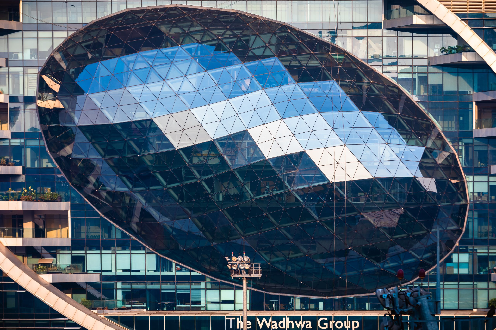
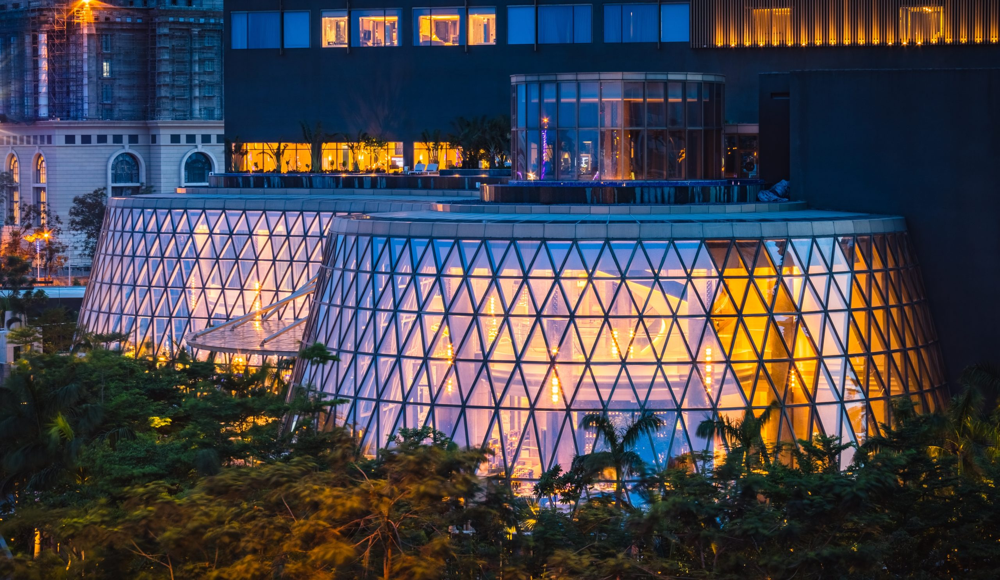
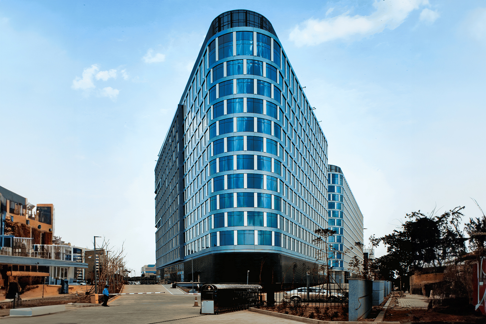
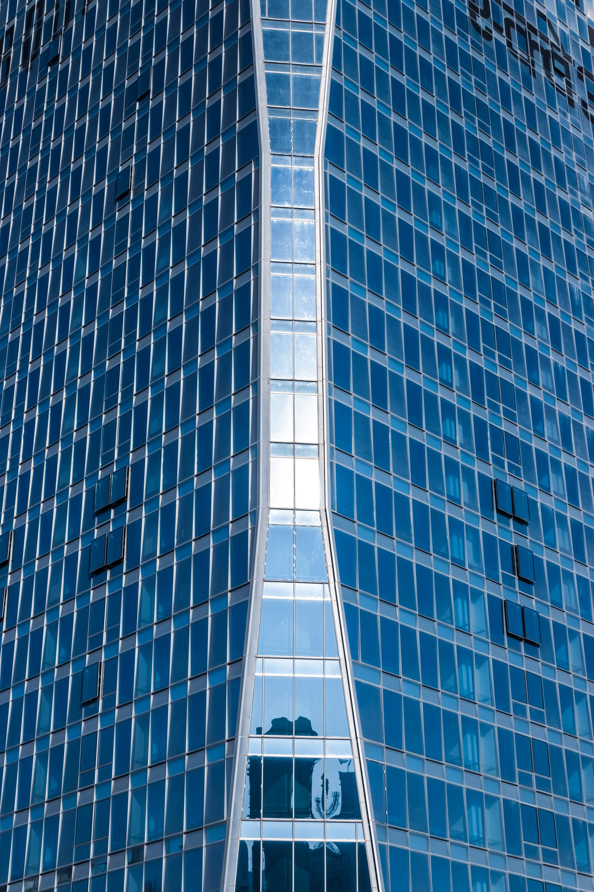
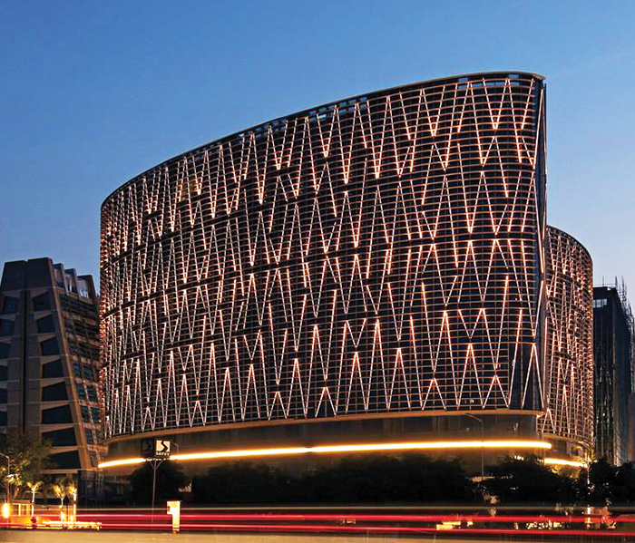
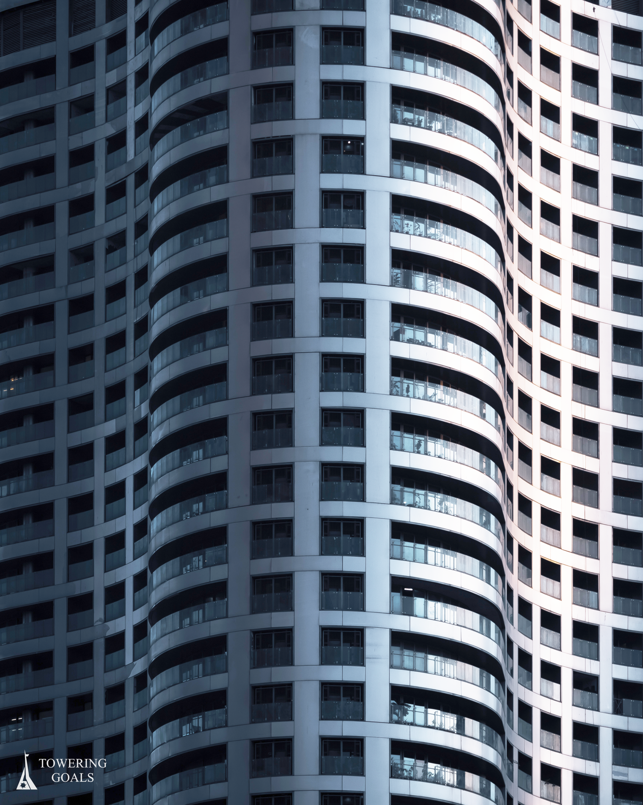
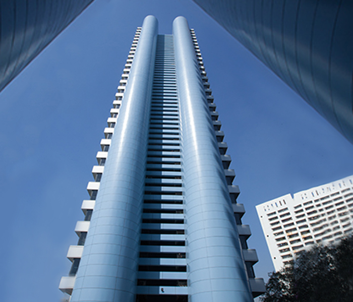
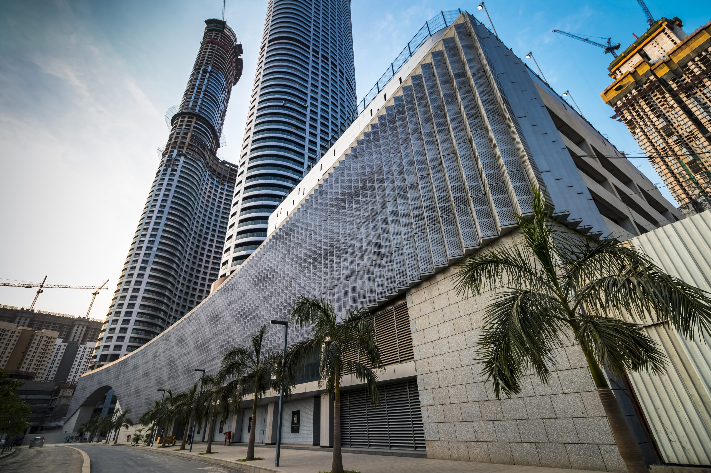
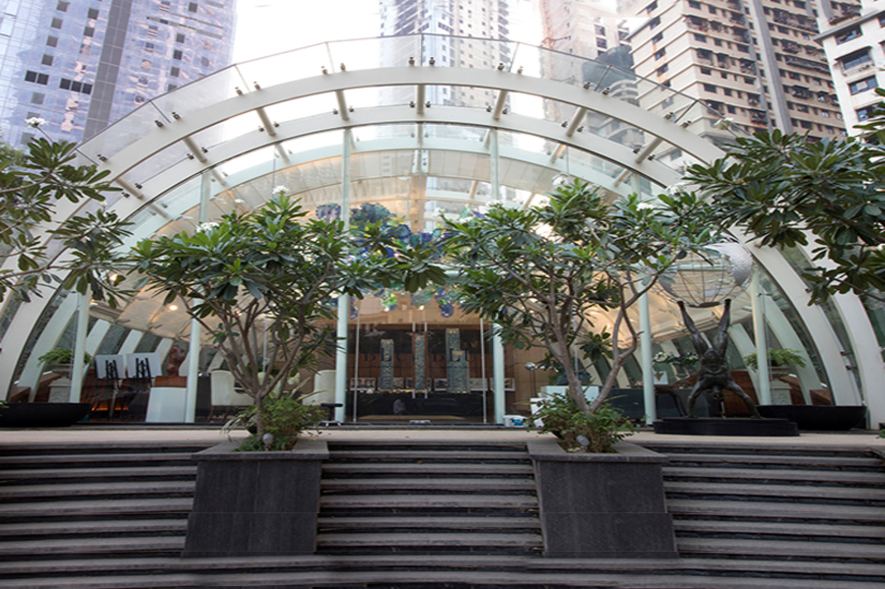

Diagrid

Free Flowing Lobby

Curved Unitized Panels

Articulated Unitized Panels

Dynamic Façade Lighting

Curved ACP Panel with System

Curved Aluminium Sheet

Perforated Aluminium Screen

Free Flowing Façade
